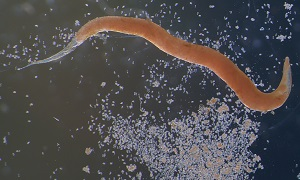

Life inside another life.
Meet the organisms that use other living things as food, shelter, and a way to reach their next host.
Common depends on where you look.
Pinworm is the most common worm infection in the U.S. Ascaris and malaria have major worldwide burdens. Giardia, Crypto, and Toxoplasma also matter in U.S. medicine. These pages are a teaching selection, not a ranked list of every parasite.

Tiny parasites. Big stomach trouble.
Giardia and Cryptosporidium are single-celled intestinal parasites found in the U.S. and worldwide.
Explore topic
The tiny worm with a nighttime routine.
Pinworm (Enterobius vermicularis) is the most common worm infection in the United States.
Explore topic
A worm that takes the scenic route.
Ascaris is a large intestinal roundworm. CDC identifies it as the most common human worm parasite globally.
Explore topic
A parasite inside red blood cells.
Malaria is caused by Plasmodium parasites, usually transmitted by infected female Anopheles mosquitoes.
Explore topic
The parasite behind the cat headlines.
A widespread single-celled parasite with a complex life cycle—and a reputation bigger than the evidence.
Explore topic
Can a parasite hijack behavior?
Yes—some infections change what an animal does in ways that help the parasite complete its life cycle.
Explore topic
Extraordinary worms. Very different risks.
Guinea worm is now very rare in humans. Loa loa is uncommon in the U.S., but can be common in affected regions of Africa.
Explore topicHow parasites get in. How we get them out.
There is no single most common route for every parasite. Geography, food, water, travel, and the organism’s life cycle all matter.
Explore topicThree useful categories
Protozoa are single-celled organisms, such as Giardia and Plasmodium. Helminths are parasitic worms, such as pinworm and Ascaris. Ectoparasites, including lice and scabies mites, live on or in the skin. Parasitic fungi appear in our animal-behavior feature.
Sources & further exploration
Educational content reviewed October 4, 2026. Photographs show real specimens or research observations; stains and imaging methods affect their appearance. CDC images are available free from CDC. Their use does not imply endorsement by CDC, HHS, or the U.S. Government.